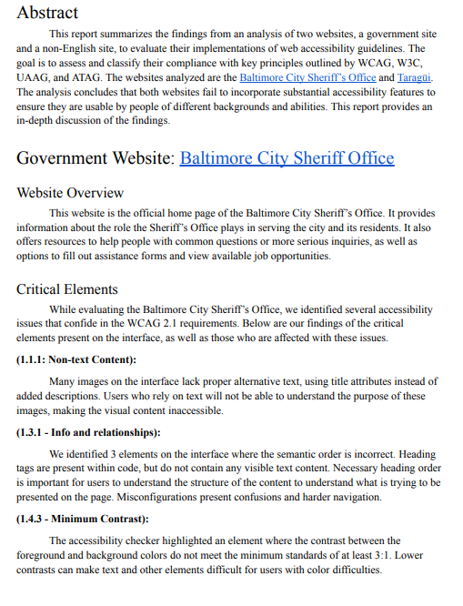
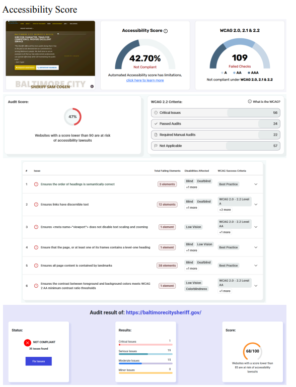
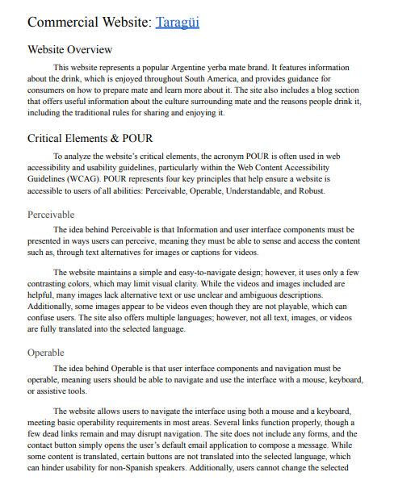
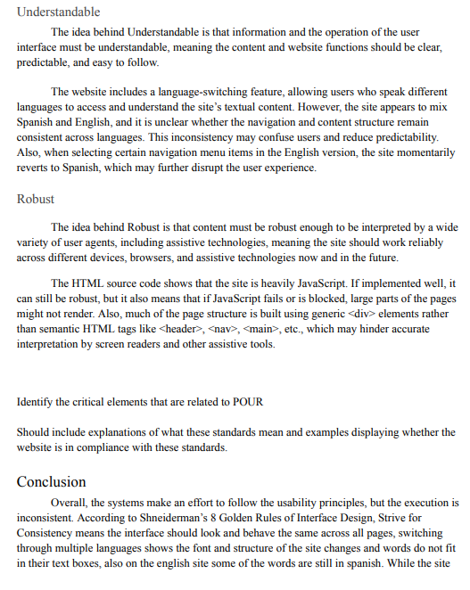

Smart Tablet Visitor System
LINKS
OVERVIEW
This report summarizes an IT project management case study for the National Aquarium’s proposed smart visitor tablet system, focusing on full SDLC planning including scope, scheduling, budgeting, and procurement strategy. It includes structured deliverables such as a project charter, WBS, Gantt chart, and network diagram to support end-to-end project planning. This work is a simulation and does not include actual system development or implementation.
CONTENT




KEY ACHIEVEMENTS
- SDLC Project Planning & Analysis — Defined project scope, requirements, objectives, and constraints for a proposed smart visitor tablet system using SDLC methodologies.
- Project Management Deliverables — Created key planning artifacts including a Project Charter, Work Breakdown Structure (WBS), Gantt Chart, Network Diagram, and cost estimates.
- Procurement Strategy — Developed an RFP and vendor evaluation process to support outsourcing decisions and solution selection.
- Executive Reporting — Presented project recommendations through a formal report and stakeholder-focused presentation.
- Impact — Applied project management principles to plan a technology solution aimed at enhancing visitor engagement and information access.